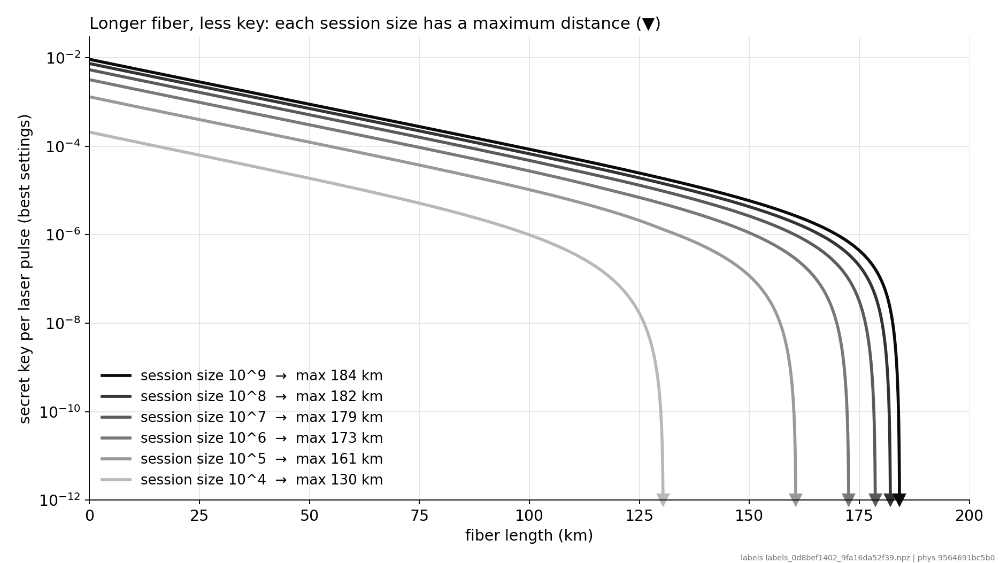
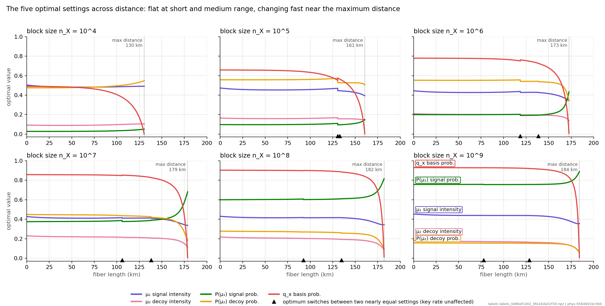

A tiny quantum circuit that
tunes a quantum-secure link
Quantum key distribution (QKD) turns a fiber into a provably secure key generator, but only if five laser settings are tuned to the link. We teach a 5-qubit circuit to do the tuning, and test it fairly against classical AI.
Longer fiber, less key, and the settings must follow

- Secret key per laser pulse drops about 10× every 50 km.
- Each link has a hard maximum distance: 130 to 184 km here, depending on the session size.
- Reaching it needs the right five settings for that distance.
Step 1: an exact solver that always finds the best settings
| situation | finds the best settings | time |
|---|---|---|
| Earlier method (2026 run) | 4 % of cases | 6–18 s |
| Our solver: a brand-new link (no previous settings to start from) | 100 % | 30 ms |
| Our solver: a running link that changed a little (starts from its current settings) | 100 % | 1.6 ms |
The dataset
61,875 examples. Each one is a link (fiber length + session size) and its best five settings, found and checked by the solver. 15 session sizes × about 4,000 fiber lengths.
Physics fixed
A bug in the earlier key-rate model was found and fixed; the model now matches the published reference within 8 %.
Cost to build
The whole dataset took 4.6 minutes on a laptop.
All five settings across distance

Why can't we just store a big table?
1 · The edge is unforgiving
Near the maximum distance, small mistakes in the settings can cost most or all of the key. A simple table is exactly right there only 1 time in 4.
2 · The recipe sometimes jumps
At a dozen or so distances the best settings switch suddenly to a different, equally good recipe. Averaging the two gives a bad one.
3 · Real links have more knobs
Detector noise, alignment, fiber quality. Every extra knob multiplies the size of a table; a learned model stays small.
For today's two inputs a big table still works well, so we measure honestly against it. The learned tuner pays off as inputs are added.
One qubit per setting, connected because the settings are

- 5 qubits = 5 settings. Measure each qubit, read off one setting; one run gives all five, always valid.
- Why the connecting wires?
- Rules tie them: signal > decoy; probabilities share 100 %.
- The data shows it: signal probability vs basis choice move together at −0.97; decoy strength vs decoy probability at +0.97.
- We test it: the same circuit without wires is trained too.
From the solver to a tuner, and a physics check at the end
Same data, same budget, every answer checked
1 · Train
Quantum circuit (simulated), a classical neural network of the same size, and a lookup table, on the same examples.
2 · Predict
Settings for distances and session sizes the models never saw.
3 · Check
Plug the predicted settings into the exact physics and measure how much of the best possible key they deliver.
The rules were written down before training. A tie or a loss for the quantum circuit counts as a valid result.
Training time (laptop, one model): quantum circuit on a simulator from under 1 min to 23 min depending on size; classical network: pending (seconds).
How good, how fast
| key delivered, typical distance | key delivered, near max distance | time per answer | |
|---|---|---|---|
| Exact solver (classical) | 100 % | 100 % | 1.6–30 ms |
| Lookup table | pending | pending | pending |
| Classical neural network | pending | pending | pending |
| Quantum circuit | pending | pending | pending |
| Quantum circuit + one exact fix-up step | pending | pending | pending |
Key delivered = key at the predicted settings ÷ best possible key, computed with the exact physics. Average over 5 training runs. Pilot: an error of 1 % of each setting's range costs about 0.4 % of the key, and two fix-up steps (1.4 ms) remove almost all of it.
Predicted vs best settings, for a session size the models never saw
More secure key from the same hardware
Real links drift
Temperature, re-routing and traffic change the fiber and the session size. Fixed settings waste key.
Near the edge it matters most
Close to the maximum distance, wrong settings can drop the key to zero where the right ones still deliver.
A fast, learned tuner
Retunes every link in milliseconds, scales to more inputs, and is a natural first workload for future quantum network nodes.
What comes next
- Finish the benchmark and fill the scoreboard (running now).
- Real quantum hardware (IQM): run the trained circuit once the budget is approved.
- More knobs: add noise, alignment and fiber loss, where tables stop scaling.
- Best of both: a learned first guess plus one exact fix-up step.